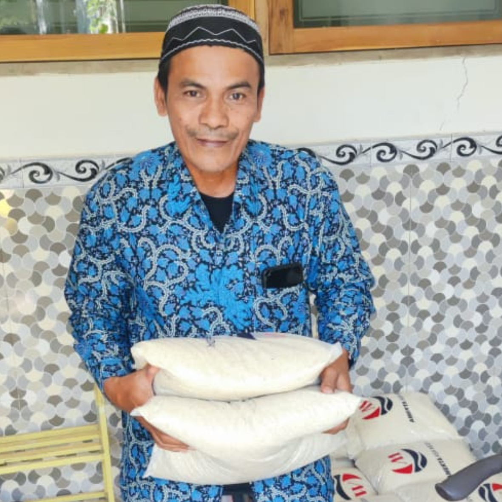
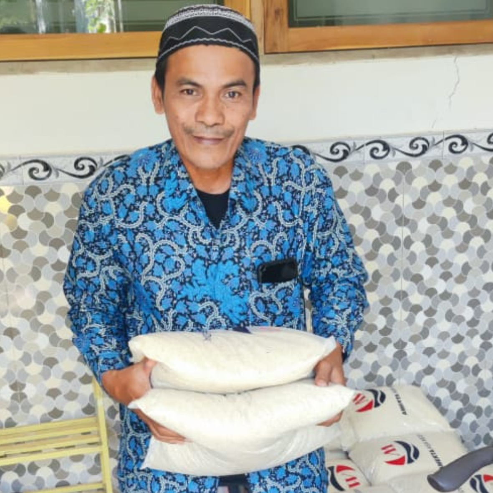

Dalam rangka merayakan pembukaan kantor baru PT. Amerta Asa Media di cabang Pasuruan, perusahaan mengadakan acara syukuran yang melibatkan seluruh karyawan dan mitra bisnis. Acara ini merupakan bentuk rasa syukur dan harapan untuk kesuksesan di masa mendatang. Acara ini tidak hanya menjadi momentum penting bagi perusahaan tetapi juga sebagai upaya mempererat hubungan internal dan eksternal di lingkungan kerja yang baru. Acara syukuran dimulai dengan potong tumpeng sebagai simbol rasa syukur. Potong tumpeng ini dilakukan oleh pimpinan perusahaan dan dilanjutkan dengan pembagian potongan tumpeng kepada seluruh peserta acara. Prosesi ini diharapkan dapat membawa berkah dan keberuntungan bagi PT. Amerta Asa Media di kantor baru ini. Potong tumpeng, yang telah menjadi tradisi dalam berbagai perayaan di Indonesia, melambangkan rasa syukur dan harapan untuk masa depan yang lebih baik.
Setelah prosesi potong tumpeng, acara dilanjutkan dengan sesi bercengkerama dan ramah tamah. Seluruh karyawan dan mitra bisnis berkesempatan untuk berinteraksi dan berbagi cerita dalam suasana yang santai dan penuh keakraban.Dalam acara ini, PT. Amerta Asa Media juga memperkenalkan fasilitas dan layanan yang tersedia di kantor baru.Hal ini diharapkan dapat memberikan gambaran yang jelas tentang kapasitas dan kapabilitas kantor baru PT. Amerta Asa Media. Kantor baru ini dilengkapi dengan teknologi terkini dan ruang kerja yang nyaman, yang diharapkan dapat meningkatkan produktivitas dan kreativitas karyawan.
Acara syukuran ini bukan hanya sekedar perayaan pembukaan kantor baru, tetapi juga sebagai momen untuk mempererat hubungan dan membangun kebersamaan. PT. Amerta Asa Media berharap kantor baru ini dapat menjadi tempat yang nyaman dan produktif untuk bekerja, serta memberikan kontribusi positif bagi perkembangan perusahaan di masa mendatang. Keberadaan kantor baru ini juga diharapkan dapat memberikan dampak positif bagi masyarakat sekitar, dengan menciptakan lapangan kerja baru dan mendukung kegiatan sosial di lingkungan setempat.
Sambutan Pimpan PT Amerta Asa Media
Dalam sambutannya, pimpinan PT. Amerta Asa Media bapak Ilham menyampaikan rasa terima kasih kepada seluruh karyawan dan mitra bisnis yang telah mendukung perusahaan hingga mencapai titik ini. Beliau juga menekankan pentingnya kerja sama dan komitmen dalam menghadapi tantangan di masa depan. Pesan ini disampaikan dengan penuh semangat, menginspirasi semua yang hadir untuk terus berkontribusi secara maksimal demi kemajuan bersama.

Kesan Karyawan Terhadap Kantor Baru.
Para karyawan yang hadir merasa bangga dan termotivasi dengan adanya kantor baru ini. Mereka melihatnya sebagai peluang untuk berkembang dan berkontribusi lebih banyak. Suasana antusias dan penuh harapan terlihat jelas selama acara berlangsung, mencerminkan semangat kebersamaan dan komitmen tinggi dari seluruh tim PT. Amerta Asa Media. Acara syukuran ini diakhiri dengan doa bersama yang dipimpin oleh salah satu tokoh masyarakat setempat. Doa ini memohon agar kantor baru ini selalu diberkahi dan segala aktivitas yang dijalankan dapat memberikan manfaat bagi banyak orang. Suasana khidmat dan haru menyelimuti penutupan acara, menandakan bahwa acara ini telah berhasil menyatukan hati dan semangat seluruh peserta.
Dengan pembukaan kantor baru di Pasuruan, PT. Amerta Asa Media berkomitmen untuk terus memberikan layanan terbaik dan berinovasi dalam bidang internet provider. Perusahaan ini berharap dapat terus tumbuh dan berkembang, memberikan kontribusi positif bagi pelanggan, karyawan, dan masyarakat secara keseluruhan.
 
